Case Study: Elevate
An app designed to help record your outdoor progress
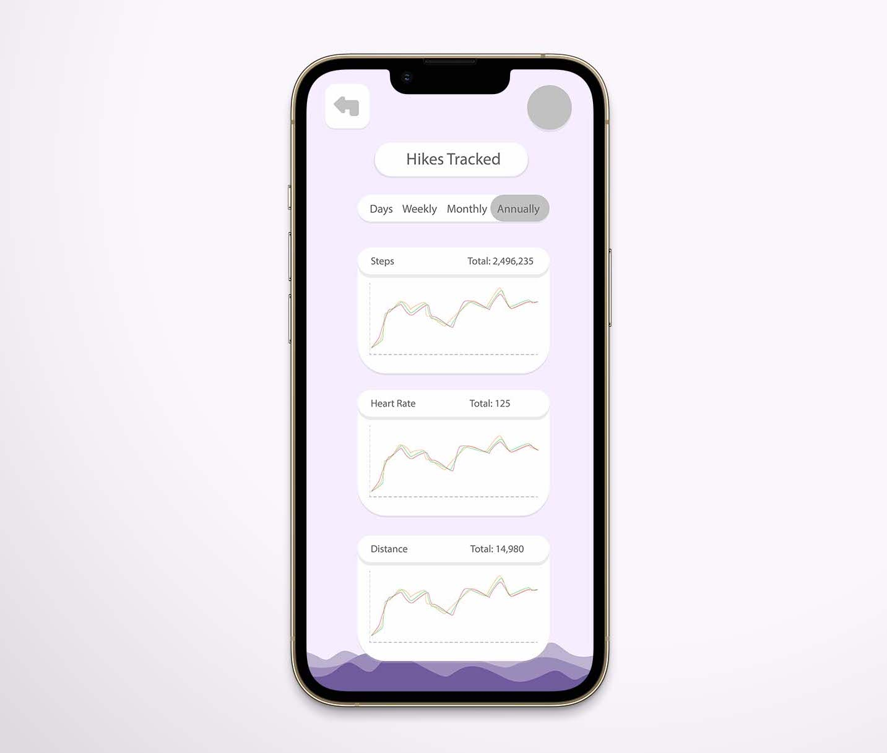For this project, we were to create the layout of an app that we wanted to exist. I created the outline of an app that would track a persons hiking performance. The purpose would be to improve health, and help people make and achieve their goals.
Role: UX Designer
School: Brigham Young University - Idaho
Date Completed: February 2021
The Problem:
Normal exercise apps don't track the elavation changes when hiking. This app is designed to help people track their hiking/outdoor preformance, improve health, or set and achieve their goals. This app was inspired by those who decided to make a change in their life during COVID 19 and live a healthier lifestyle, also hoping to encourage others to do the same.
This app allows users to track their distance, even when elevation changes - such as hiking hills or mountains - or track their calorie burn after each recorded hike. They can compare distance, calorie burn, steps taken, ect. to other hikes on previous days, months, or years.
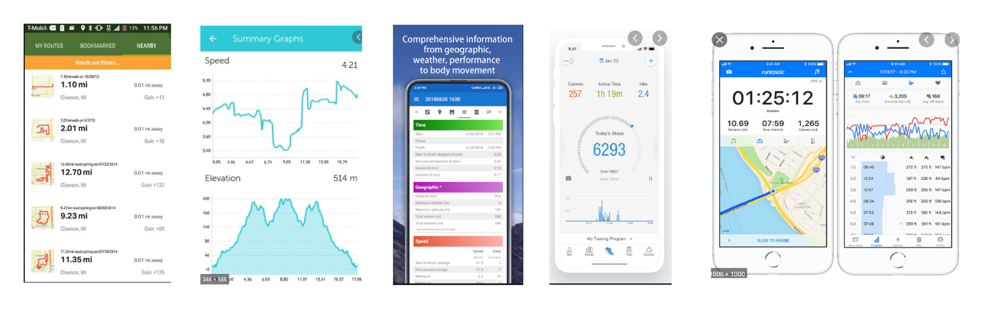Before getting started, I needed to know what apps where already out there so I could understand what was needed for this app to work and have all the functions that other apps are lacking. I researched similar apps that calculate distance, elevation, time, speed, calories, and other things that I intend on using as features in this app.
Overview:
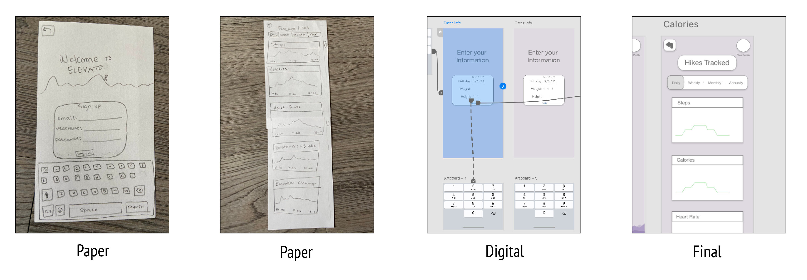Here is a quick overview of the process. I first began with sketching my idea out on paper. Then began Usability Testing.
Usability Testing Round 1:
There are three scenarios to test key features of my app. To test them, I designed a rough prototype where I then gathered feedback from participants. Here is what I learned.
Scenarios and Tasks:
1. During the COVID 19 pandemic, you decided to find a way to stay healthy physically while also keeping a safe distance from others. You were drawn to hiking and wanted to track your daily distance and calorie burn. You just downloaded the app "Elevate". Task: Launch the app.
2. You just finished a hike and you want to check how far you hiked. Task: Check your total hiking stats.
3. After checking your overall hiking outcome, you want to check the calorie burn of your hike. Task: Check your calorie burn.
Paper Prototype: Round 1:
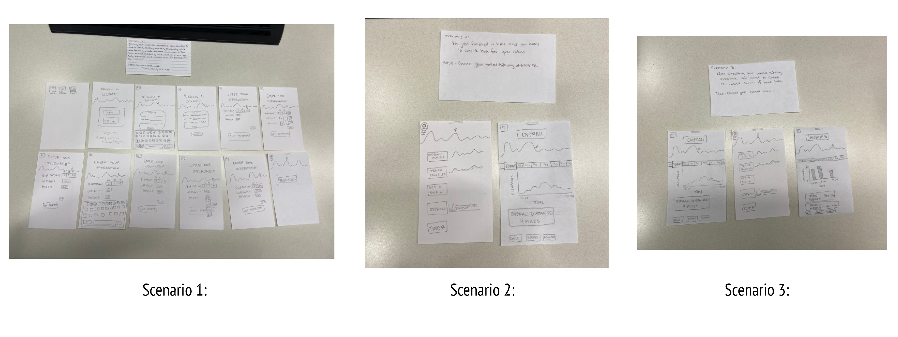Results From Round 1 Testing
What I learned from the first round of usibilty tests was: how to better phrase the scenarios, how to better word the names on buttons and how to effectively arrange them - in order of most importance and most used, as well as using categories or how to fit the categories into less buttons/ sections. This will help the users better understand the puposes of the buttons.
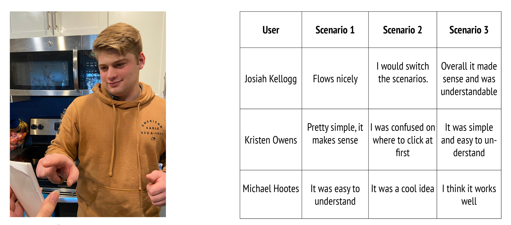Usability Testing Round 2:
Scenarios and Tasks:
1. During the COVID 19 pandemic, you decided to find a way to stay healthy physically while also keeping a safe distance from others. You were drawn to hiking and wanted to track your daily distance and calorie burn. You just downloaded the app "Elevate". Task: Launch the app.
2. You just finished a hike and you want to see how well the app recorded the data. Task: Check how many calories you burned while hiking.
3. You just checked your overall calorie burn of your hike, now you want to check the distance and elevation change during the hike. Task: Check your distance and elevation change from the hike.
Paper Prototype: Round 2:
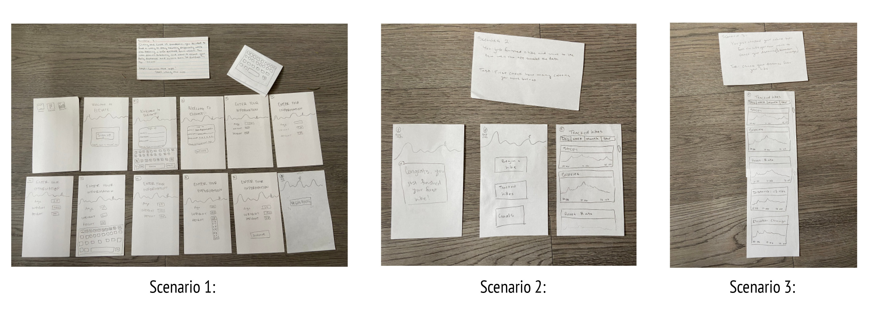Results From Round 2 Testing
What I learned from the second round of usibilty testing: how to make users feel more comfortable when inputting their personal information. I also learned how to better organize or plan out the buttons on the app so that it is easier to navigate through the app.
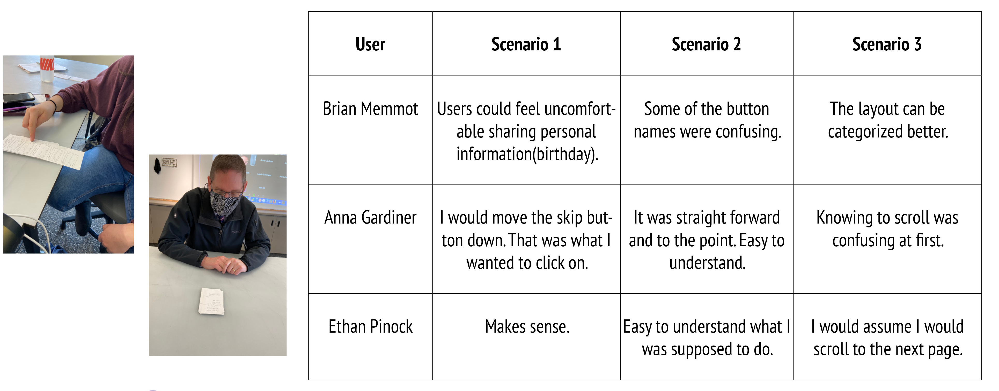Usability Testing Round 3:
Scenarios and Tasks:
1. During the COVID 19 pandemic, you decided to find a way to stay healthy physically while also keeping a safe distance from others. You were drawn to hiking and wanted to track your daily distance and calorie burn. You just downloaded the app "Elevate". Task: Launch the app.
2. You just finished a hike and you want to see how well the app recorded the data. Task: Check how many calories you burned while hiking.
3. You just checked your overall calorie burn of your hike, now you want to check the distance and elevation change during the hike. Task: Check your distance and elevation change from the hike.
Digital Prototype: Round 3:
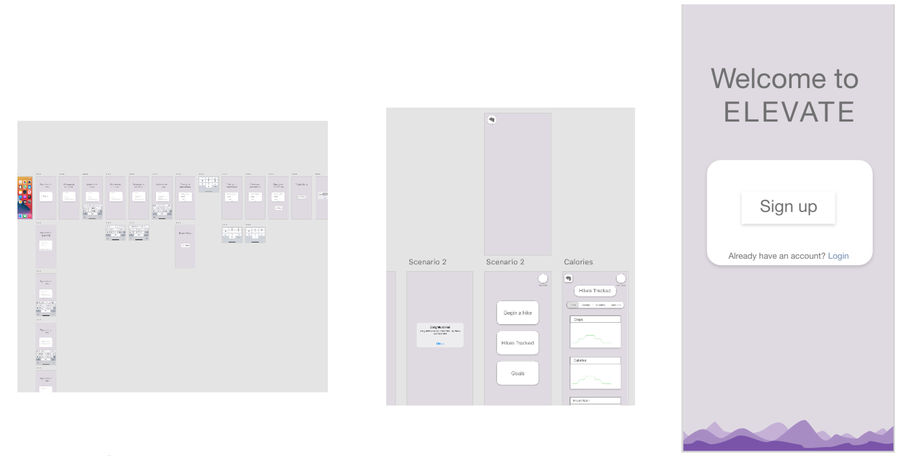Results From Round 3 Testing: What I Learned
As I tested the first digitally designed prototype, I noticed that I needed to fix the scrolling option, as well as increase the size of some buttons. It was difficult for people to click on some buttons and they would repeatedly try until it worked. I also learned how to simulate scrolling, which at first I had difficulty adding. Scrolling should be simple and easy, or it gets frustrating.
I learned the importance of the heirarchy of scale when dealing with text, buttons, information, and anything where there are users from many different aspects of life. It was importanct to test different age groups and people from different backgrounds to make sure you aren't overlooking small things when designing a product.
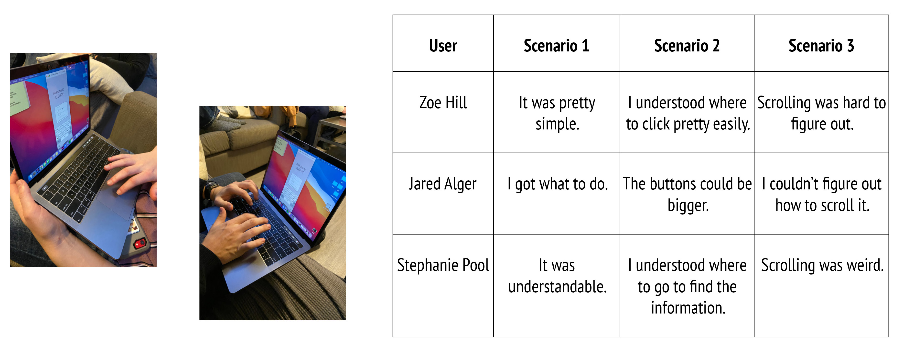End Results: Main Screens
The images below walk through using the app. They have captions below each image.
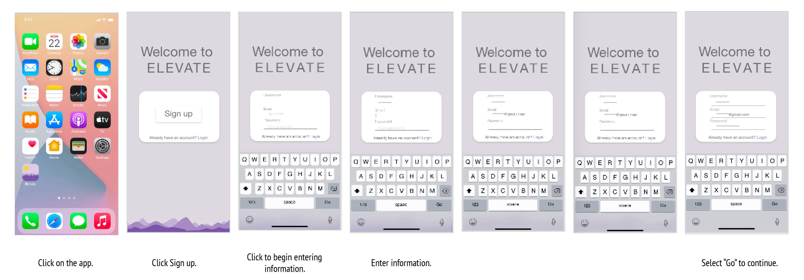 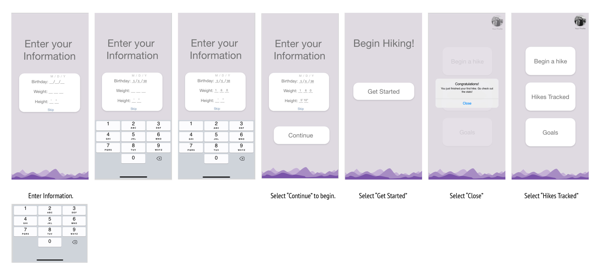 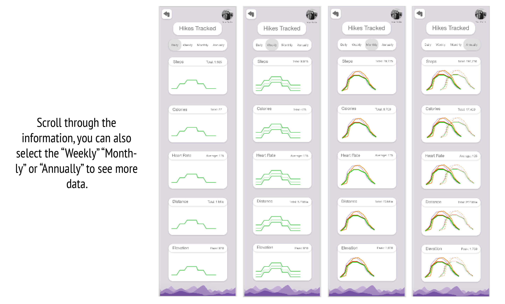